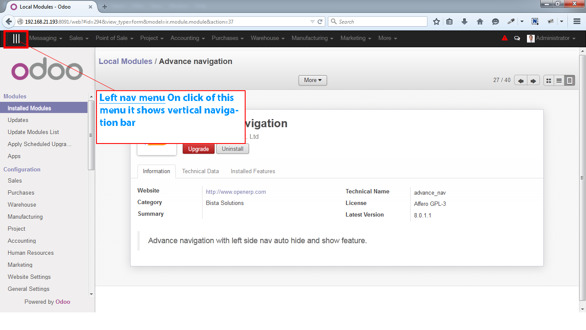
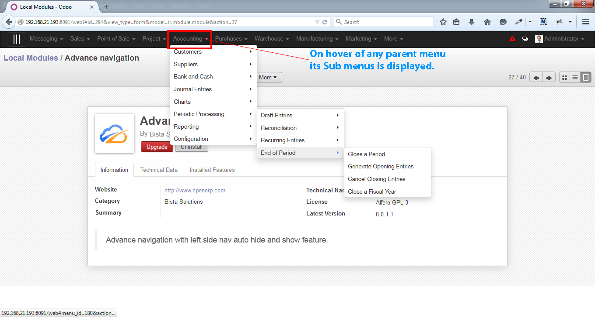

<section class="oe_container">
    <div class="oe_row oe_spaced">
        <h2 class="oe_slogan">Advance Navigation For Menu</h2>
        <h3 class="oe_slogan"></h3>
        <div class="oe_span6">
            <div class="oe_demo oe_picture oe_screenshot">
                <a href="https://www.openerp.com/saas_master/demo?lang=en_US&module=account">
                    
                    
                </a>
            </div>
        </div>
        <div class="oe_span6">
            <p class='oe_mt32'>
1. Default vertical navigation bar is hidden on installation of module and this can be accessed using the left nav menu. <br class='oe_mt32'>
2. Ease of access to all the Odoo functionality through thehorizontal navigation bar,  <br class='oe_mt32'>
    Each menus of the horizontal bar consist of sub menus of the particular module.
        </div>
    </div>
</section>

